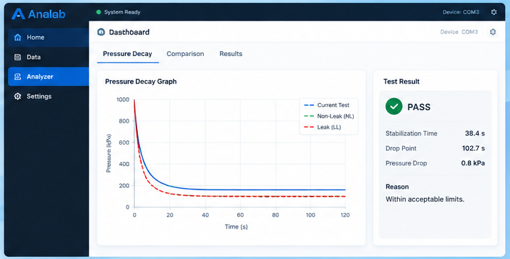

High Accuracy Analysis
Detect even the smallest pressure changes.
Analab is a professional software solution for pressure decay leak testing, designed to help you analyze, compare and evaluate test results with precision and confidence.

Detect even the smallest pressure changes.
Compare with known standards for reliable results.
Clear results with detailed reasoning.
Save time with automated analysis and reporting.
Intuitive interface for smooth operation.